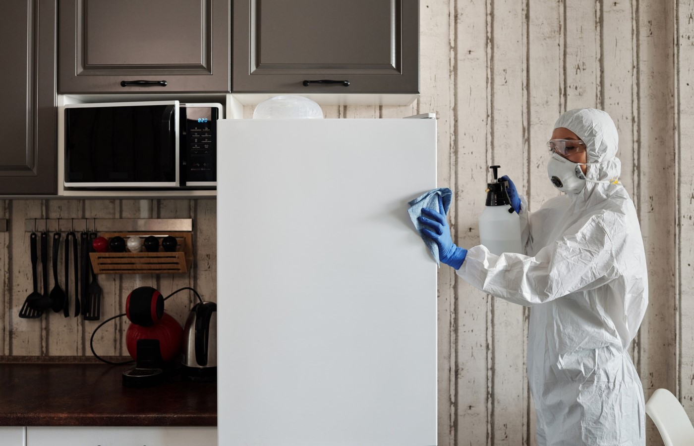

Tatortreinigung nach Verbrechen oder Unfällen

Tatortreinigung nach Verbrechen oder Unfällen erfordert spezialisierte Fachkräfte. Wir beseitigen effizient und diskret alle Spuren von Gefahrenstoffen, Schäden und Gerüchen, um betroffene Bereiche wieder sicher und bewohnbar zu machen. Unsere schnelle und professionelle Reaktion hilft in schwierigen Situationen
- Spezialisierte Fachkräfte für Tatortreinigung
- Professionelle Hilfe für Tatortreinigungsfälle
- Schnell und professionell